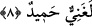

8. Mûsâ dedi ki: “Eğer siz ve yeryüzünde olanların hepsi nankörlük etseniz, iyi
bilin ki Allah gerçekten zengindir, hamd edilmeye lâyıktır.”
“Mûsâ dedi ki:” Ey İsrâiloğulları! “Eğer siz ve yeryüzünde olanların hepsi” bütün
insanlar ve cinler, Allah’ın nîmetlerine “nankörlük etseniz,” hiç şükretmeseniz, “iyi
bilin ki Allah gerçekten zengindir” ne sizin ne de başkalarının şükrüne muhtaç değildir.
O, hem zâtı hem sıfatları hem de fiilleri bakımından “hamd edilmeye lâyıktır”
övülmüştür. Bu bakımdan kimsenin îmân ya da inkârının O’na etkisi yoktur.
Kâşifî şöyle der: “Bütün mahlûkâtın zerreleri O’nun nîmetlerini ifâde eder. Bütün
varlıkların dili O’nun tesbih ve hamdi ile meşguldür.”
Bütün zerreler O’nun zikrini söyler
Cümlesi şevkınden O’nu arar, ister
Sa‘dî (k.s.) şöyle der:
Gördüğün her şey O’nun zikriyle cûş u hurûşdadır
Bu mânâdan haberdar olan her gönlün mânevî kulağı vardır
Gülistanda tesbih okuyan sâdece bülbül değildir
Her diken de O’nun tevhîdini söyler
[3]. Buhârî, Zekât, 27; Müslim, Zekât, 57